THE AMERICAN HOME FRONT
AND HARD CHOICES
In 1942, a 19-year-old woman named Sybil Lewis left her home in Sapulpa, Oklahoma and took a bus to Los Angeles. She had heard that war factories were hiring. Within weeks, she was riveting the fuselage panels of Lockheed aircraft at a plant in Burbank, California. She was one of six million American women who stepped into the workforce to keep the country running while men were away. But as the war went on, a harder question emerged: the United States was fighting for freedom overseas, so why were some Americans still denied freedom at home?
In 1942, Sybil Lewis was 19 years old. She left Oklahoma and went to Los Angeles for war work. Soon she was helping build airplanes at a Lockheed factory. Millions of women did jobs like this during WWII. But the war raised a hard question: America said it was fighting for freedom, so why did many Americans still lack freedom at home?
WOMEN AT WAR: THE HOME FRONT WORKFORCE
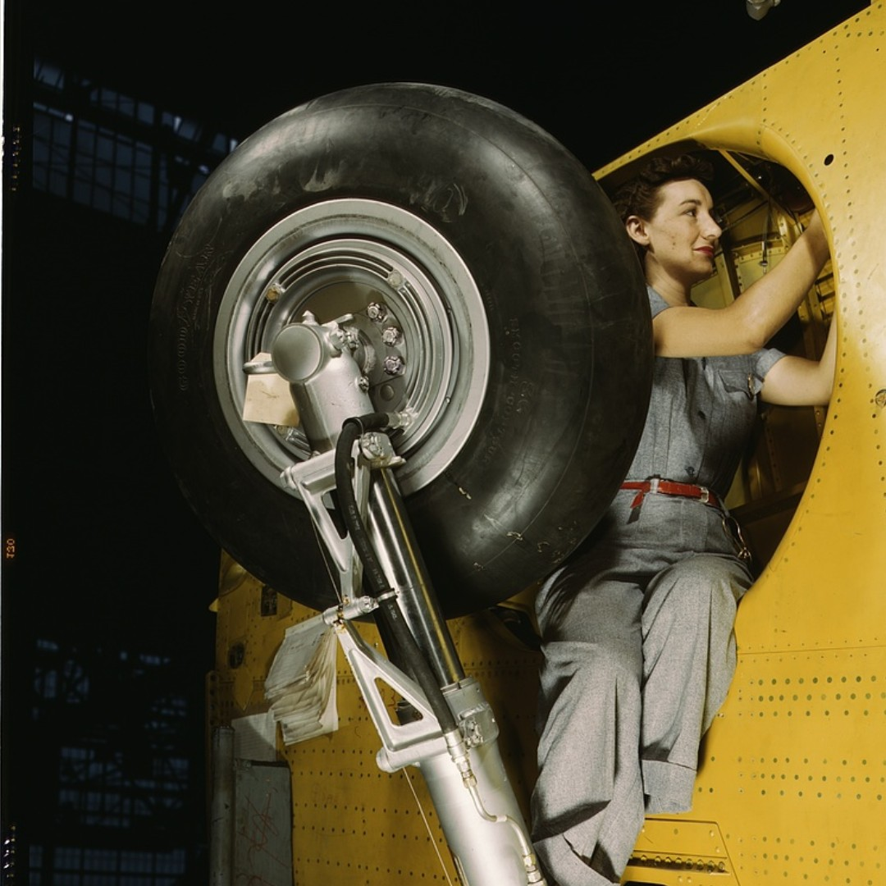
When the United States entered World War II, factories faced a crisis. Millions of men were leaving for military service, and someone had to build the ships, planes, tanks, and ammunition needed to fight the war. The government launched a huge campaign to recruit women into industrial jobs that had almost always been held by men.
When the United States entered WWII, factories needed workers fast. Many men had left to fight. Someone still had to build planes, ships, tanks, and bullets. The government asked women to take factory jobs that men had usually held.
The home frontThe civilian side of the war effort: the factories, farms, and communities inside the United States that supported the military. became its own kind of battlefield. Women welded ships, assembled bombers, and loaded artillery shells. Their labor was not extra help. It was essential to winning the war.
The home front was the civilian side of the war. Women worked in shipyards, airplane plants, and weapons factories. Their work was not just helpful. It was needed to win.
The government knew it had to change how Americans thought about women's work. Posters and magazine ads created the image of “Rosie the Riveter”: a woman in factory clothes with her sleeves rolled up and her fist raised. The message was clear: factory work was patriotic, strong, and modern. By 1944, women made up 37 percent of the American workforce.
The government used posters to change people's minds. “Rosie the Riveter” showed a strong woman ready to work. The message was simple: women could help win the war. By 1944, women were 37 percent of all workers in the country.
For many women, especially Black women and women from poor families, the war created the first real chance to earn a living wage. After the war, many were pushed out of those jobs when men returned. But the experience changed what women believed was possible. Later movements for women's equal rights were partly built on the ground these women broke during the war.
For many women, the war was their first chance to earn better pay. This was especially true for Black women and poor women. After the war, many women lost those jobs. But they had already proved they could do the work.
“Women must learn to play the game as men do. I am happy that women are being called upon for service in so many lines. What we need now is to be sure that women's contribution to this war effort is recognized, valued, and made permanent.”Eleanor Roosevelt, address to the National Conference on Women in War Industries, 1942.
The First Lady argued that women's wartime work should not disappear after the war ended.
QUESTION 1: What is Eleanor Roosevelt asking for on behalf of women workers?
QUESTION 2: How does this source connect to the question of whether wartime sacrifices were shared equally?
During WWII, families used ration books to buy basics like sugar, meat, coffee, and gasoline. Even if a store had the item, you still needed the right stamp to take it home.
FIGHTING FOR FREEDOM: BLACK AMERICANS, THE 442ND, AND THE CODE TALKERS
As American soldiers fought Nazi racism in Europe, many Black Americans, Japanese Americans, and Native Americans served in a segregated military. Black soldiers trained separately, ate separately, and often received worse equipment than white units. Many asked a painful question: why are we fighting for freedom overseas when we do not have it here?
American soldiers fought racism in Europe. But the U.S. military still treated many soldiers unequally. Black soldiers were often kept separate from white soldiers. Many people asked: why fight for freedom overseas if we do not have it at home?
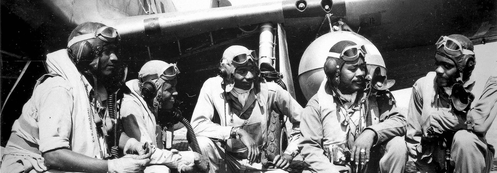
The Tuskegee AirmenThe first Black military pilots in the U.S. Army Air Forces, trained at Tuskegee, Alabama during WWII. were the first Black military aviators in American history. By 1945, the 332nd Fighter Group had flown more than 1,500 combat missions in Europe and North Africa. Their success forced the military to reconsider racist assumptions about Black Americans, though it did not end segregation overnight.
The Tuskegee Airmen were the first Black military pilots in U.S. history. They flew more than 1,500 missions. Their success proved racist ideas wrong. But the military stayed segregated until after the war.
Japanese American soldiers faced another cruel contradiction. Even as the U.S. government locked up Japanese American families in camps, Japanese American men volunteered to fight for the country. The 442nd Regimental Combat TeamA U.S. Army unit made up mostly of Japanese American soldiers that became one of the most decorated units in American history. fought in Italy and France and became one of the most decorated units in U.S. military history.
Japanese American soldiers faced a painful problem. Their families were often locked in camps by the U.S. government. Still, many Japanese American men volunteered to fight. The 442nd Regimental Combat Team became one of the most honored units in U.S. history.
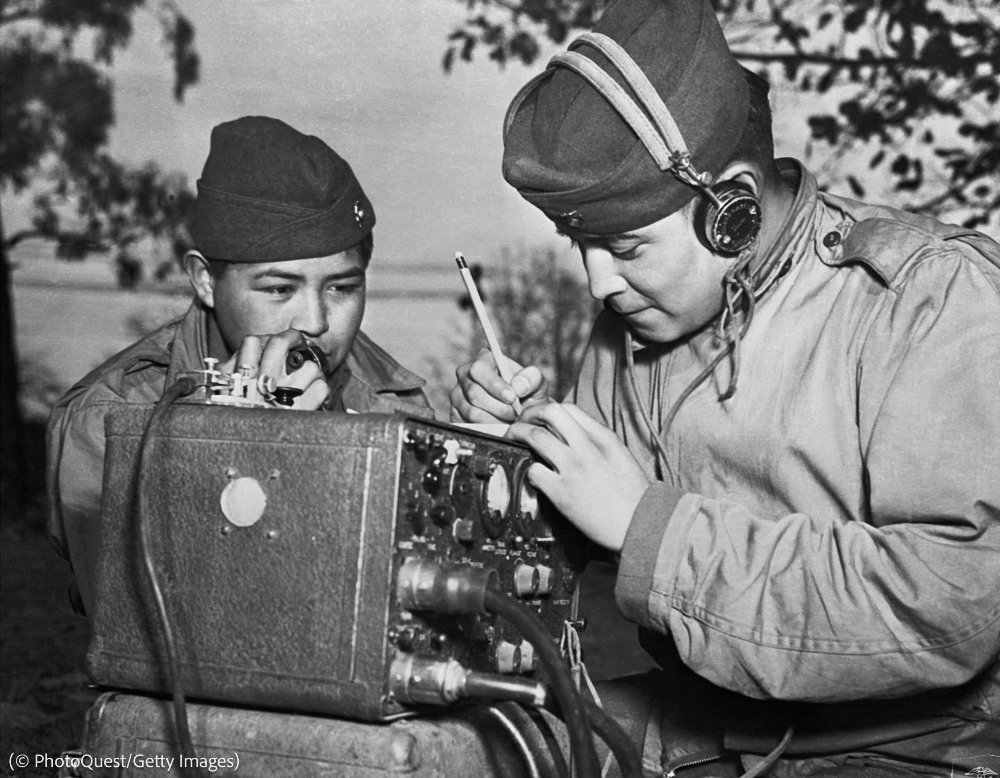
Native American soldiers made a different kind of contribution. Navajo Marines sent battlefield messages using a code based on the Navajo language. Japanese code breakers never cracked it. The government kept their work classified until 1968, more than 20 years after the war ended.
Native American soldiers also helped in a special way. Navajo Marines sent secret radio messages using their language. Enemy code breakers never solved the code. The U.S. kept their work secret until 1968.
TUSKEGEE AIRMEN
Black pilots who flew combat missions in Europe and North Africa and challenged racist military assumptions.
442ND REGIMENT
Japanese American soldiers who fought while many of their families were imprisoned in U.S. camps.
NAVAJO CODE TALKERS
Marine radio operators whose code was never broken during the Pacific war.
The story of these groups raises a sharp question. If someone is willing to die for a country, do they deserve equal rights in that country? The gap between what America said it stood for and how it treated its own people became fuel for the Civil Rights Movement after the war.
These stories ask a hard question. If someone risks their life for a country, should that country give them equal rights? Many Americans answered yes. Their wartime service helped push the Civil Rights Movement forward.
INTERNMENT: FEAR, PREJUDICE, AND EXECUTIVE ORDER 9066
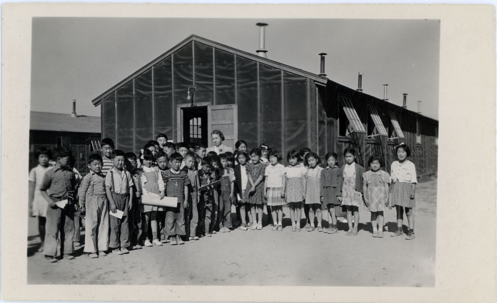
After Pearl Harbor, fear and anti-Japanese prejudice spread across the West Coast. Many Americans assumed that Japanese Americans, even those born in the United States, might secretly be loyal to Japan. There was no evidence for this fear. But fear and racism pushed the government to act.
After Pearl Harbor, many people on the West Coast became afraid. Some accused Japanese Americans of being loyal to Japan. There was no proof. Fear and racism still shaped government action.
On February 19, 1942, President Roosevelt signed Executive Order 9066. It gave the military power to remove people from the West Coast. More than 120,000 people of Japanese ancestry were forced to leave their homes and report to camps. Most had only days to sell property, businesses, and belongings. Many lost almost everything.
On February 19, 1942, President Roosevelt signed Executive Order 9066. The order allowed the military to remove people from the West Coast. More than 120,000 Japanese Americans were forced from their homes. Many had only a few days to leave.
Two-thirds of those incarcerated were American citizens. They had committed no crime. No charges were filed. No trials were held. Families lived in wooden barracks behind barbed wire, watched by armed guards. Children said the Pledge of Allegiance behind a fence.
Most people in the camps were U.S. citizens. They had not been charged with a crime. They did not get trials. Families lived in barracks behind fences. Armed guards watched them.
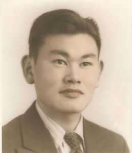
Fred Korematsu refused to go. He was a 23-year-old welder from Oakland who had been born in the United States and had never set foot in Japan. He was arrested, convicted, and sent to a camp. In 1944, the Supreme Court ruled in Korematsu v. United States that internmentThe forced imprisonment of a group of people during wartime based on identity rather than individual crimes. was constitutional. It became one of the most criticized decisions in Supreme Court history.
Fred Korematsu refused to report to a camp. He was born in the United States and had never been to Japan. He was arrested and convicted. In 1944, the Supreme Court said the camps were legal. Today, many people see that decision as a major failure of civil rights.
In 1988, Congress passed the Civil Liberties Act. The law formally apologized to Japanese Americans and paid $20,000 to each surviving person who had been incarcerated. The United States admitted that internment had been driven by “race prejudice, war hysteria, and a failure of political leadership.” The apology mattered, but it came more than four decades too late.
In 1988, Congress apologized. The government paid $20,000 to each surviving person who had been imprisoned. It admitted that racism, fear, and failed leadership caused the camps. The apology mattered, but it came very late.
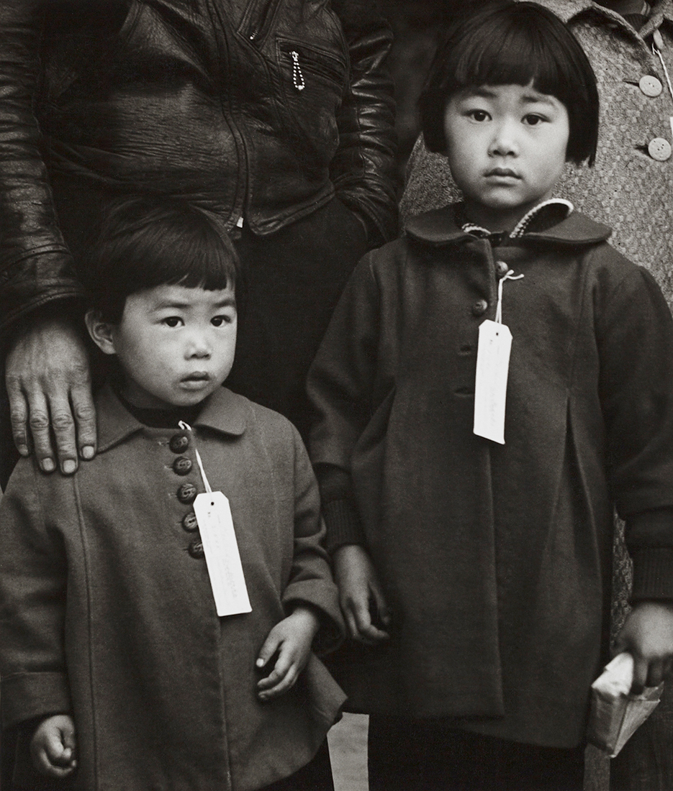
What do you think one of these children asked their parents when they saw the tags?
HARD CHOICES: THE ATOMIC BOMB, THE HOLOCAUST, AND THE END OF THE WAR
By spring 1945, Germany had surrendered, but Japan fought on. American military planners estimated that an invasion of Japan could cost hundreds of thousands of American lives and millions of Japanese lives. The war had already killed more than 400,000 Americans. Something had to end it quickly.
By spring 1945, Germany had surrendered. Japan kept fighting. U.S. leaders feared that invading Japan would kill huge numbers of people. They wanted to end the war fast.
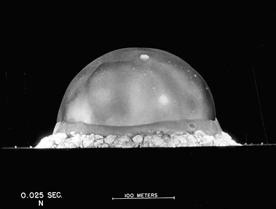
The United States had been secretly building an atomic bombA weapon that uses nuclear fission, the splitting of atoms, to create a massive explosion. since 1942 through the Manhattan Project. Scientists tested the first device in New Mexico on July 16, 1945. The weapon worked. President Harry Truman now had a choice that no leader had ever faced before.
The United States had secretly built an atomic bomb. Scientists tested it in New Mexico in July 1945. It worked. President Truman now had to decide whether to use it.
On August 6, 1945, the United States dropped an atomic bomb on Hiroshima. About 80,000 people died instantly. Three days later, a second bomb destroyed Nagasaki and killed about 40,000 more right away. Japan announced its unconditional surrenderA surrender in which the losing side accepts all terms and gives up without conditions. on August 15, 1945. World War II was over.
On August 6, 1945, the United States dropped an atomic bomb on Hiroshima. About 80,000 people died right away. Three days later, another bomb hit Nagasaki and killed about 40,000 people right away. Japan surrendered on August 15, 1945.
- An invasion of Japan could have killed huge numbers of Americans and Japanese.
- Japan had not surrendered yet.
- Ending the war quickly saved Allied prisoners of war.
- The bomb ended the deadliest war in history.
- The bombs destroyed civilian cities.
- Some historians argue Japan was close to surrender.
- Civilians had no real chance to evacuate.
- Using nuclear weapons created a danger the world still lives with.
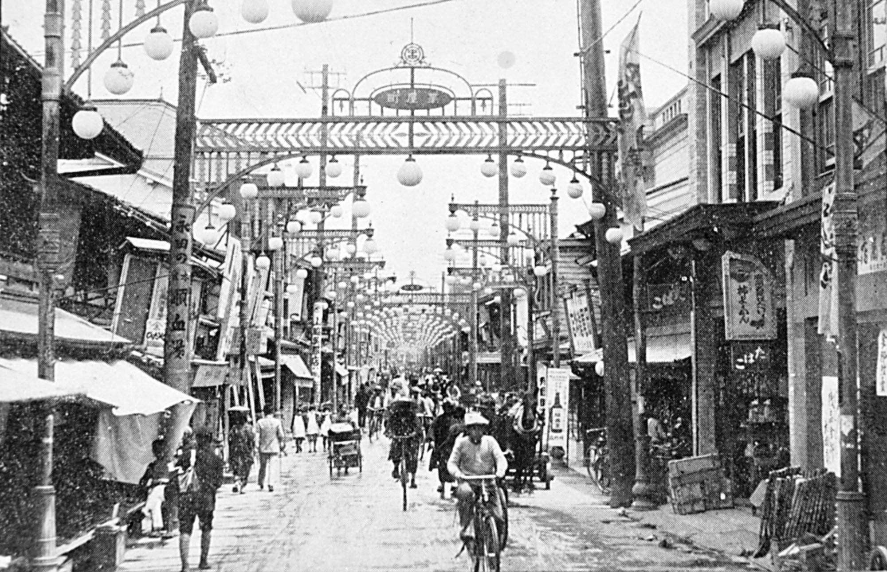

While the war raged in the Pacific, a different catastrophe was unfolding in Europe. The Holocaust was the systematic murder of six million Jewish people and millions of others by Nazi Germany. American forces liberated many camps in 1945 and were shocked by what they found.
At the same time, Nazi Germany was carrying out the Holocaust in Europe. Six million Jewish people were murdered, along with millions of others. American soldiers liberated camps in 1945 and saw the horror directly.
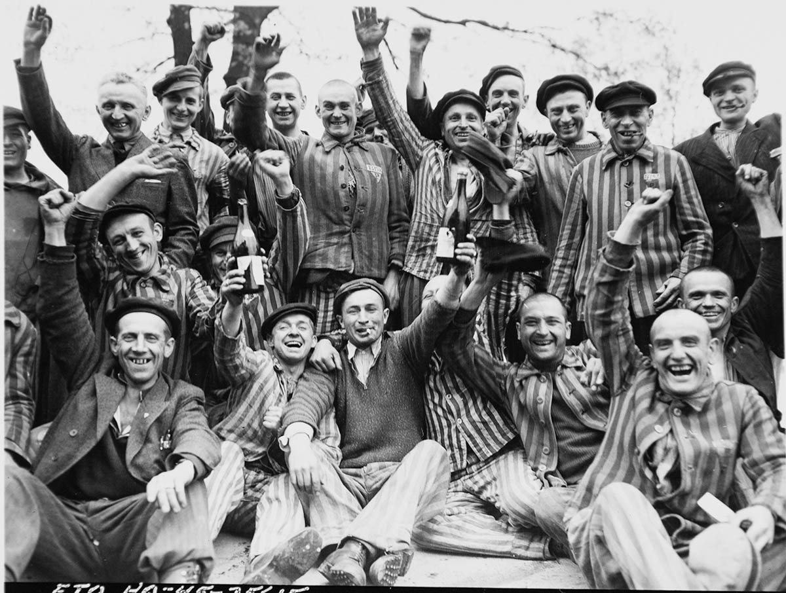
The question of American responsibility for the Holocaust is painful. By 1942, the U.S. government had reliable information that Nazi Germany was murdering Jews across Europe. Yet the United States turned away many refugees and did not bomb the rail lines leading to Auschwitz. The reasons were political and bureaucratic. The consequences were measured in lives.
The United States knew by 1942 that Nazis were murdering Jews. Still, the U.S. turned away many refugees. It also did not bomb the rail lines to Auschwitz. These choices had deadly results.
“I visited every nook and cranny of the camp because I felt it my duty to be in a position from then on to testify at first hand about these things in case there ever grew up at home the belief or assumption that ‘the stories were propaganda.’”General Dwight D. Eisenhower, letter to General George Marshall, April 15, 1945.
Eisenhower looked closely because he already feared that people might later deny what had happened.
QUESTION 1: Why did Eisenhower want to see the camp himself?
QUESTION 2: What does this source suggest about why witnesses matter after a crime against humanity?
HOW THIS STILL MATTERS TODAY
A country shows what it values most when fear, war, and pressure test whether rights belong to everyone.
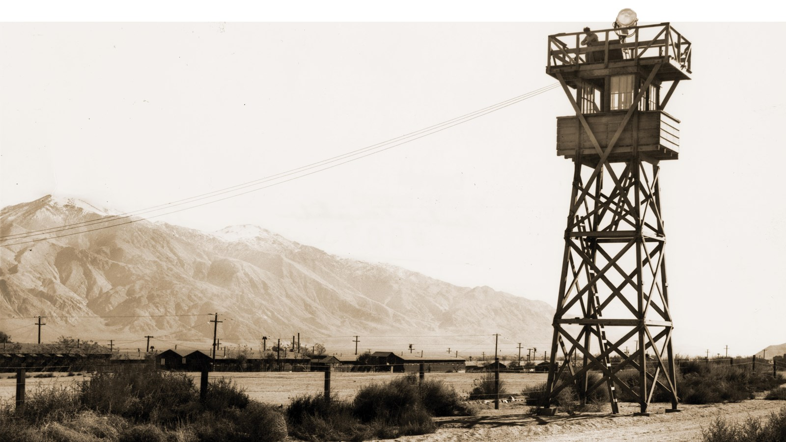
A guard tower at Manzanar, one of the camps where Japanese Americans were incarcerated during WWII.
A modern memorial remembering Japanese American incarceration and military service during WWII.
What would you want written in public so people do not turn this story into just a paragraph in a textbook?
If your country asked you to sacrifice your home, business, or freedom in the name of safety, what would you want the country to owe you afterward?
SAN DIEGO'S JAPANESE AMERICAN COMMUNITY AND THE CAMPS
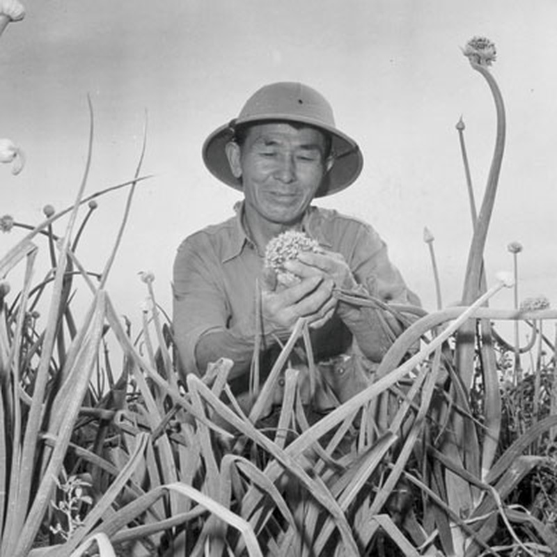
San Diego had a significant Japanese American community before the war, especially in Logan Heights, National City, Chula Vista, and El Cajon. When Executive Order 9066 took effect, many families were forced to report to the Santa Anita Assembly Center before being transferred to camps. Some returned after the war, but many farms, businesses, and neighborhoods never fully recovered.
Before WWII, many Japanese American families lived and worked in San Diego County. Communities existed in Logan Heights, National City, Chula Vista, and El Cajon. After Executive Order 9066, many families were sent first to Santa Anita and then to camps. Some came back, but many lost homes and businesses forever.